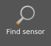

Starting the ifmVisionAssistant and connecting to the O3C-System
Start page
After launching the ifmVisionAssistant, the start page appears.

The start page provides these functions:
Icon |
Function |
Description |
|---|---|---|
 |
Find sensor |
Searches for connected devices. |
Recent |
Displays previously connected devices. |
|
Replay |
Replays a saved image capture. |
Window controls
Icon |
Control |
Description |
|---|---|---|
Zoom out |
Reduces the window size. |
|
Zoom in |
Enlarges the window size. |
|
Full screen |
Displays the application in full-screen mode. |
|
Exit |
Closes the software. |
Press F11 to switch between full-screen and windowed mode.
Verify the installation
After executing the ifmVisionAssistant.exe, the ifmVisionAssistant is loading and opening the start screen. The start page contains the basic functions of the ifm Vision Assistant.

By using find sensor
To automatically connect the ifmVisionAssistant with the O3C, a peer to peer connection is necessary. Having a switch and/or a router in between (leaving the broadcast domain), will interfere or make the automatic search impossible.
In these circumstances, or if the ifmVisionAssistant cannot automatically find the O3C, a manual connection is necessary.

Manual connection
To connect manually to a system, the respective article and IP address of the system is needed. To open up the manual connection dialogue, please press the keyboard shortcut CTRL + M.
After choosing the article O3C, the IP address is requested.
Warning: Both the O3R and the PC need to be in the same network address area. The default IP for the O3R is 192.168.0.69. The PC should not have this IP address.
Connect to recent systems by using Recent
The ifmVisionAssistant saves former established connections. This could also include other hardware like O2I, O2D, O3X, etc.
Using the recent connection can save time instead of always using the find/manual connection.